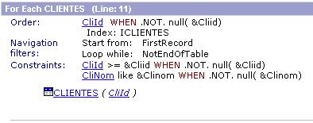

In GeneXus it is possible to condition both the filters (usually known as filter conditions or constraints) and the orders indicated in the objects or in the Grid controls, using the WHEN clause.
This will allow having a better performance in the queries that include several search criteria, since it is possible to coordinate the search order with the suitable conditions.
Description
Filter Conditions
It is possible to condition the filters specified at the For Each command level, for the general Conditions of an object or a Grid. Thus, when a condition takes place this filter will be applied. If the condition applied to the constraint does not take place, the filter is not considered.
The conditions’ syntax (WHERE, etc.) in GeneXus is the following:
Condition [WHEN <Constraint>];
Where:
Condition is a GeneXus condition.
Constraint is the condition that enables Condition.
Conditional filter conditions are additions (with AND) among them, and it is possible that no constraint applies, if all the corresponding conditions are false.
To generate a conditional constraint as such, you must be in a Client/Server architecture and the DBMS that is being used must be able to “evaluate” the Condition ;i.e.: GeneXus must know how to write the Condition in the language of the DBMS used.
If it cannot be generated as such (because the destination generator does not support it or because the condition cannot be written in the DBMS language), it will be transformed into a “standard” filter substituting the WHEN by an OR. Besides, the following code message will be generated in the navigation report: spc0053 -‘Unsupported conditional constraint "%1" changed to standard constraint %2.’-
Navigation List
When defining a conditional filter, the navigation report shows it as a conditional constraint and it does not take part in the determination of the Start From/LoopWhile.
E.g.:

Generated Statements
The statements generated for the conditional filters are similar to the ones generated for the standard filters (without the WHEN clause). The main difference is that, having all the possible strings, only the corresponding ones, according to the conditions, are concatenated. Besides, the variables values are instantiated.
Example :
- The filter CusAddr >= &CusAddr or not null(&CusAddr) generates the statement:
SELECT CusAddr, CusNam, CusId FROM CUSTOMERS (NOLOCK) WHERE CusAddr = ? or (?=' ') ORDER BY CusId
- If this filter becomes conditional: CusAddr >= &CusAddr WHEN not null(&CusAddr) the statement generated will be:
- When the &CusAddr variable is null:
SELECT CusAddr, CusNam, CusId FROM CUSTOMERS (NOLOCK) ORDER BY CusId
- When the &CusAddr variable has some value:
SELECT CusAddr, CusNam, CusId FROM CUSTOMERS FROM CLIENTES (NOLOCK) WHERE CusAddr = 'Miguelete 1234' ORDER BY CliId
Aggregate Formulas do not support conditional filters
Conditional orders
It is possible to specify alternative navigation orders, depending on the application requirements. The corresponding syntax is:
[ORDER] <OrderAttList> [WHEN <Constraint1>]
[ORDER] <OrderAttList1> [WHEN <Constraint2>]
...
<OrderAttListX> is a list of attributes delimited by spaces or commas that indicate the navigation order. If you want a descending order by some of the attributes, you must put brackets round it.
<ConstraintX> is the condition enabling the corresponding <OrderAttList>.
If none of the Constraints is true and there is not an unconditional Order (without the WHEN clause), the navigation order is undefined. In this case, undefined means that it can vary from DBMS to DBMS, even in successive executions.
If more than one of the Constraints is true, you must take the order of the first ORDER clause defined. For this reason, this should be the preferred order for the queries.
If conditional orders are specified but the generator does not support this, the navigation order will be the one specified as unconditional order. If there is not an specified unconditional order, it will be the primary key of the base table of the group. Besides, the following code message will be generated in the navigation chart: spc0054 -‘ Unsupported conditional order %2. Using default order in %1.’-.
Conditional orders are not supported with Breaks. The following code message will be generated in the navigation chart: spc0055 -‘ Conditional order in group starting at line %1 not allowed (Break group).’-.
General considerations
- They only apply to generators using SQL as method to access the database.
- If the Constraint has attributes, they are considered as instantiated. I.e.: the Constraint is evaluated before starting the navigation and it does not change during it.
Performance.
Due to the implementation procedure used, the groups with conditional order or filters are not expected to be used within loops with high level of occurrences. This may cause performance problems since the SQL statements are dynamically built and the time devoted to the “analysis” that must be performed by the DBMS in each execution may be quite long for these situations. Apart from the above mentioned, we expect important improvements in the performance of queries of the type: “tell me what data do you have and I search it”, since, with the suitable conditions, filters can be coordinated with the search order.
Examples
Example 1
There follows an example of a filter condition:
ClienteNombre LIKE &ClienteNombre
WHEN NOT null(&ClienteNombre);
ClienteCedula >= &ClienteCedula
WHEN NOT null( &ClienteCedula);
The previous code is interpreted as follows:
If the &ClienteNombre variable has some value, GeneXus will apply the filter: ClienteNombre LIKE &ClienteNombre. Besides, if the &ClienteCedula variable has some value, it will also apply the filter: ClienteCedula >= &ClienteCedula, in and AND relation with the other filters.
If no variable has value, no filter will be applied.
Example 2
For each ClienteNombre WHEN NOT null(&ClienteNombre)
Order ClienteCedula WHEN NOT null( &ClienteCedula)
...
Endfor
In this For Each, the navigation will be performed ordered by ClienteNombre if the &ClienteNombre variable has some value. If it does not have any value, the order will be by ClienteCedula if &ClienteCedula has some value. If none of the previous conditions occurs, the navigation will be performed in an undefined order.
For each ClienteNombre WHEN NOT null(&ClienteNombre)
Order ClienteCedula WHEN NOT null( &ClienteCedula)
Order ClienteId
...
Endfor
In this second For Each of the example, the navigation orders are the same as the ones of the first one, but for the case where none of the Conditions occurs because there is an unconditional Order. In this case, the navigation is performed by the unconditional Order.
Scope
Objects: Work Panels, Web Panels, Procedures, Reports
DBMS: DB2/UDB, Informix, Oracle, SQL Server
|